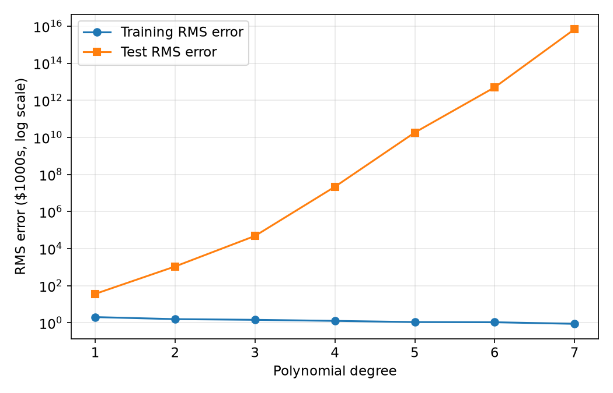
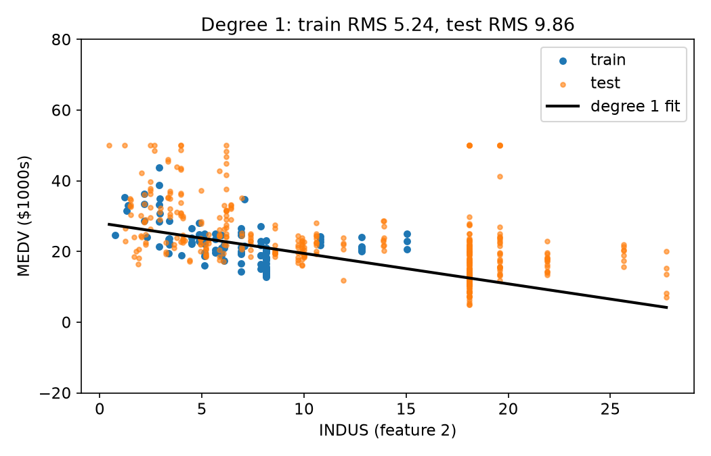
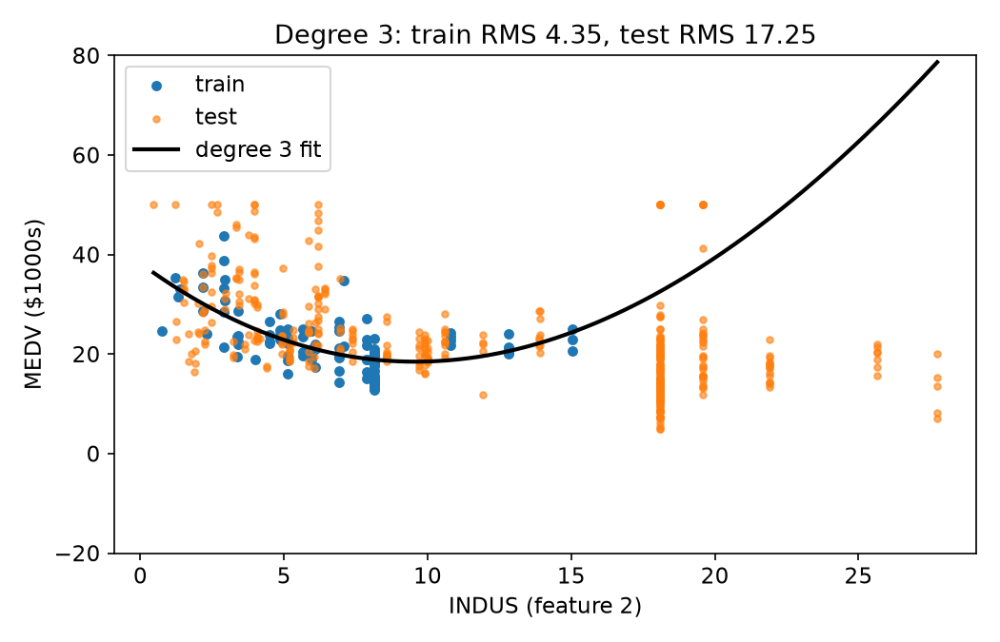
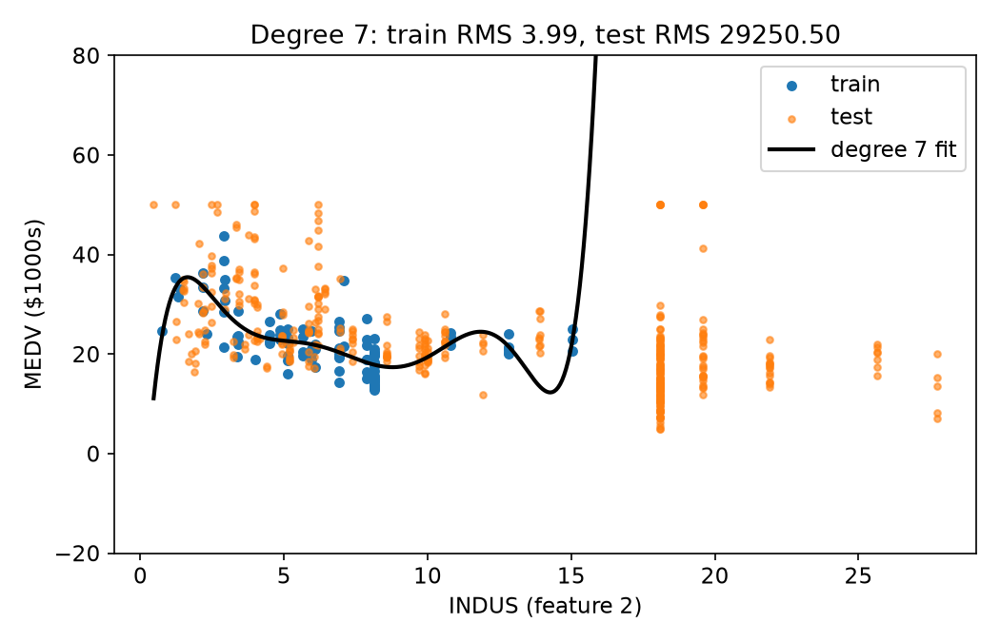
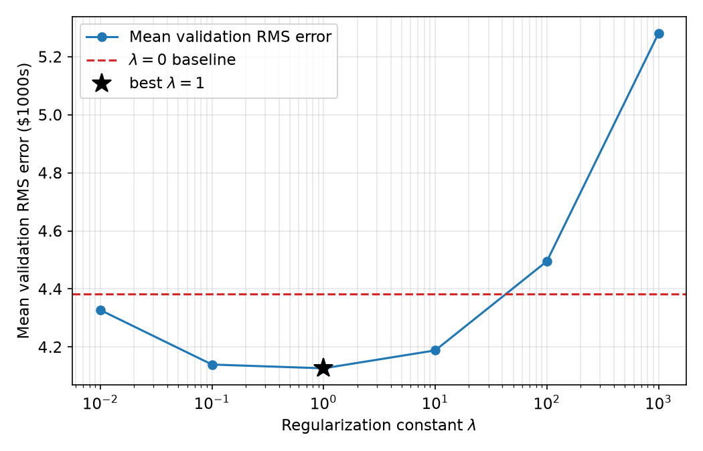

This part implements linear basis function regression with polynomial basis functions on the Boston Housing dataset. The task is to predict the median house value (MEDV, in thousands of dollars) from the 13 town-level features. Only monomials of a single variable are used, with no cross-terms, so for a degree-$M$ model the feature vector is $$\phi(\mathbf{x}) = (1,\; x_1, x_1^2, \dots, x_1^M,\; x_2, x_2^2, \dots, x_2^M,\; \dots,\; x_{13}, \dots, x_{13}^M)$$ The first 100 points are the training set and the remaining 406 points are the test set.
Normalization. Each raw feature is standardized using the training mean and standard deviation only, $$\tilde{x}_j = \frac{x_j - \mu_j^{\text{train}}}{\sigma_j^{\text{train}}}$$ and the polynomial terms are then built from $\tilde{x}_j$. The same $\mu_j, \sigma_j$ are applied to the test set. The target MEDV is not normalized, so all errors are in thousands of dollars. In the training set the feature CHAS is always $0$ ($\sigma = 0$), so its standard deviation is replaced by $1$ and the column becomes identically zero.
Unregularized fit. With design matrix $\Phi$ and targets
$\mathbf{t}$, the weights are the least-squares solution $$\mathbf{w} =
\arg\min_{\mathbf{w}} \|\Phi\mathbf{w} - \mathbf{t}\|_2^2 =
\Phi^{+}\mathbf{t}$$ computed with
numpy.linalg.lstsq (minimum-norm solution when $\Phi^T\Phi$
is singular, which happens for CHAS and for high degrees).
Error metric:
$\text{RMS} = \sqrt{\frac{1}{N}\sum_n (y_n - t_n)^2}$.
Feature indexing. Features are indexed from $0$, matching the assignment's convention in part (b) where the 5th feature is the average number of rooms (RM) and the 7th is the distance to employment centres (DIS). Under this convention, the single feature used in parts (c) and (d) is feature $2$, INDUS (proportion of non-retail business acres).
def load_data(path="BostonHousing.csv"):
"""First 100 rows -> training set, remaining 406 rows -> test set."""
data = pd.read_csv(path).values.astype(float)
X, t = data[:, :-1], data[:, -1]
return X[:N_TRAIN], t[:N_TRAIN], X[N_TRAIN:], t[N_TRAIN:]
def normalize(X_train, *others):
"""Z-score using the training mean/std only (std of 0 is replaced by 1)."""
mu = X_train.mean(axis=0)
sd = X_train.std(axis=0)
sd[sd == 0] = 1.0
return [(X_train - mu) / sd] + [(X - mu) / sd for X in others]
def poly_design(X, degree):
"""Bias column, then x1..x1^d, x2..x2^d, ... (monomials, no cross-terms)."""
cols = [np.ones(len(X))]
for j in range(X.shape[1]):
for p in range(1, degree + 1):
cols.append(X[:, j] ** p)
return np.column_stack(cols)
def fit_ls(Phi, t):
"""Unregularized least squares, w = pinv(Phi) t."""
return np.linalg.lstsq(Phi, t, rcond=None)[0]
def rmse(Phi, w, t):
return np.sqrt(np.mean((Phi @ w - t) ** 2))
polynomial_regression fits degrees $1$ to $7$ on all 13
features (no regularization) and returns the training and test RMS errors.
def polynomial_regression(X_train, t_train, X_test, t_test, max_degree=7):
"""Fit degree 1..max_degree polynomial basis regression (all features)."""
Xn_train, Xn_test = normalize(X_train, X_test)
train_err, test_err, weights = [], [], {}
for d in range(1, max_degree + 1):
Phi_train = poly_design(Xn_train, d)
Phi_test = poly_design(Xn_test, d)
w = fit_ls(Phi_train, t_train)
train_err.append(rmse(Phi_train, w, t_train))
test_err.append(rmse(Phi_test, w, t_test))
weights[d] = w
return train_err, test_err, weights| Degree | Training RMS | Test RMS |
|---|---|---|
| 1 | 2.037 | 36.44 |
| 2 | 1.578 | $1.10\times 10^{3}$ |
| 3 | 1.449 | $4.87\times 10^{4}$ |
| 4 | 1.270 | $2.19\times 10^{7}$ |
| 5 | 1.097 | $1.84\times 10^{10}$ |
| 6 | 1.073 | $5.02\times 10^{12}$ |
| 7 | 0.881 | $6.88\times 10^{15}$ |

Comment. The training error decreases monotonically from 2.04 at degree 1 to 0.88 at degree 7, as expected because each model contains the previous one and a degree-7 model has 92 parameters for only 100 training points. The test error behaves in the opposite way: it is already 36.4 at degree 1, about 18 times the training error, and then grows by orders of magnitude to roughly $6.9\times 10^{15}$ at degree 7. This is overfitting, but the size of the blow-up is mainly caused by extrapolation. The first 100 towns cover only a narrow slice of the dataset: for example, CRIM never exceeds $1.61$ in the training set but reaches $88.98$ in the test set, which is about $229$ training standard deviations from the training mean. A degree $M$ term grows like $z^M$, so these test points produce enormous predictions, and the higher the degree the worse it gets. The training error alone would suggest picking the highest degree, but the test error shows that degree 1 is the only reasonable choice here.
Running the degree-1 model gives the weights in Table 2. These are weights on the normalized features, so each one is the change in predicted MEDV (in thousands of dollars) for a one-standard-deviation increase in that feature. Because the features are centred and MEDV is not, the bias equals the training mean of MEDV ($22.309$).
| Weight | Feature | Description | Value |
|---|---|---|---|
| $w_0$ | bias | — | 22.3090 |
| $w_{1}$ | CRIM (feature 0) | per-capita crime rate | -1.3380 |
| $w_{2}$ | ZN (feature 1) | zoned residential land | 0.1230 |
| $w_{3}$ | INDUS (feature 2) | non-retail business acres | -0.5311 |
| $w_{4}$ | CHAS (feature 3) | Charles River dummy | 0.0000 |
| $w_{5}$ | NOX (feature 4) | nitric oxide concentration | 1.0027 |
| $w_{6}$ | RM (feature 5) | avg. rooms per dwelling | 4.1956 |
| $w_{7}$ | AGE (feature 6) | owner-occupied units built pre-1940 | -2.1663 |
| $w_{8}$ | DIS (feature 7) | distance to 5 employment centres | 0.0107 |
| $w_{9}$ | RAD (feature 8) | highway accessibility index | -0.1938 |
| $w_{10}$ | TAX (feature 9) | property-tax rate | -0.3486 |
| $w_{11}$ | PTRATIO (feature 10) | pupil-teacher ratio | 0.2613 |
| $w_{12}$ | B (feature 11) | proportion of Black residents index | 0.1811 |
| $w_{13}$ | LSTAT (feature 12) | % lower-status population | 0.1488 |
Feature 5 (RM). The weight is 4.1956. The training standard deviation of RM is 0.488 rooms, so converting back to the original units gives $4.1956 / 0.488 \approx 8.59$ thousand dollars per additional room. This is reasonable: the sign is positive (more rooms means a more valuable house) and it is the largest positive weight in the model.
Feature 7 (DIS). The weight is 0.0107, which is essentially zero (0.008 thousand dollars per unit of distance in the original units). This is not what one would expect: towns closer to the employment centres should be more desirable, which would suggest a clearly negative weight. A likely explanation is collinearity within the training set: DIS is correlated with ZN ($0.60$) and NOX ($-0.48$), and these features absorb the effect that DIS would otherwise carry. With only 100 points from a small geographic area, individual weights are not very stable, so this weight should not be interpreted as saying that distance does not matter. Finally, the CHAS weight is exactly $0$ only because no training town borders the Charles River.
To visualize the regression, only feature $2$ (INDUS) is used.
polynomial_regression_1d_vis normalizes the feature with the
training statistics, fits a polynomial of the requested degree, and plots
the training points, the test points and the learned polynomial, evaluated
on a dense grid over the full range of the data. The vertical axis is
clipped to $[-20, 80]$ so the shape of the curve is visible.
def polynomial_regression_1d_vis(X_train, t_train, X_test, t_test,
degree, feature=2, ax=None):
"""Fit a degree-d polynomial to a single feature and plot it."""
x_train, x_test = X_train[:, [feature]], X_test[:, [feature]]
xn_train, xn_test = normalize(x_train, x_test)
w = fit_ls(poly_design(xn_train, degree), t_train)
# dense grid in the original units, normalized with the training stats
lo = min(x_train.min(), x_test.min())
hi = max(x_train.max(), x_test.max())
grid = np.linspace(lo, hi, 400)[:, None]
grid_n = normalize(x_train, grid)[1]
curve = poly_design(grid_n, degree) @ w
if ax is not None:
ax.scatter(x_train, t_train, s=18, c="tab:blue", label="train")
ax.scatter(x_test, t_test, s=10, c="tab:orange", alpha=0.6,
label="test")
ax.plot(grid, curve, "k-", lw=2, label=f"degree {degree} fit")
ax.set_xlabel(f"{FEATURES[feature]} (feature {feature})")
ax.set_ylabel("MEDV ($1000s)")
ax.set_ylim(-20, 80)
ax.legend()
return (rmse(poly_design(xn_train, degree), w, t_train),
rmse(poly_design(xn_test, degree), w, t_test))
The line has a gentle negative slope (higher industrial share, lower house value) and captures the overall trend. It underfits the training points slightly (training RMS 5.24), but it is the best on the test set (test RMS 9.86), including for the test towns with INDUS far beyond the training range.

The cubic follows the training points more closely (training RMS 4.35): it falls steeply at low INDUS, flattens out near INDUS $\approx 10$, and then curves back upward. That upturn is driven by the last few training points, and beyond INDUS $\approx 15$ the curve keeps rising (to about $79$ at INDUS $= 27.7$) while the test towns there are worth $7$ to $20$, so the test RMS rises to 17.25. The extra flexibility is already being spent on the particular shape of the 100 training points.

The degree-7 polynomial oscillates through the training points (training RMS 3.99), then shoots up steeply right after INDUS $\approx 15$, where the training data ends. The test towns have INDUS up to $27.7$, well past the end of the training data, so the curve is far from them, giving a test RMS of about 29,250. This is a clear example of high-order polynomials overfitting and extrapolating badly.
polynomial_regression_reg fits a degree-8 polynomial to the
single feature INDUS using only the first 100 points, with the L2 penalty
$$E(\mathbf{w}) = \|\Phi\mathbf{w} - \mathbf{t}\|_2^2 + \lambda \sum_{j
\ge 1} w_j^2 \quad\Longrightarrow\quad \mathbf{w} = (\Phi^T\Phi + \lambda
I')^{-1}\Phi^T\mathbf{t}$$ where $I'$ is the identity with its first
diagonal entry set to $0$ so the bias is not penalized. For each $\lambda
\in \{0, 0.01, 0.1, 1, 10, 100, 1000\}$, 10-fold cross-validation is used:
the 100 points are randomly shuffled (fixed seed) into 10 folds of 10
points, and each fold is used once for validation. The normalization
statistics are recomputed on the 90 training points of each fold, and the
validation RMS error is averaged over the 10 folds.
def fit_ridge(Phi, t, lam):
"""L2-regularized least squares; the bias weight is not penalized."""
P = np.eye(Phi.shape[1])
P[0, 0] = 0.0
return np.linalg.solve(Phi.T @ Phi + lam * P, Phi.T @ t)
def polynomial_regression_reg(X_train, t_train, degree=8, feature=2,
lambdas=LAMBDAS, k=10, seed=0):
"""10-fold CV for L2-regularized polynomial regression on one feature."""
x = X_train[:, [feature]]
n = len(x)
folds = np.array_split(np.random.default_rng(seed).permutation(n), k)
cv_err = {lam: [] for lam in lambdas}
for i in range(k):
val = folds[i]
trn = np.concatenate([folds[j] for j in range(k) if j != i])
xn_trn, xn_val = normalize(x[trn], x[val]) # stats from fold only
Phi_trn = poly_design(xn_trn, degree)
Phi_val = poly_design(xn_val, degree)
for lam in lambdas:
w = fit_ridge(Phi_trn, t_train[trn], lam)
cv_err[lam].append(rmse(Phi_val, w, t_train[val]))
return {lam: float(np.mean(e)) for lam, e in cv_err.items()}| $\lambda$ | Mean validation RMS |
|---|---|
| $0$ | 4.382 |
| $0.01$ | 4.327 |
| $0.1$ | 4.139 |
| $1$ | 4.126 |
| $10$ | 4.188 |
| $100$ | 4.495 |
| $1000$ | 5.281 |

Choice of $\lambda$. The validation error is lowest at $\lambda = 1$ (4.126), compared with 4.382 for no regularization, so I would choose $\lambda = 1$. For very large $\lambda$ the model is forced to be nearly flat and underfits (5.28 at $\lambda = 1000$, close to the spread of MEDV itself), while for very small $\lambda$ the degree-8 polynomial overfits. The curve is shallow between $0.1$ and $10$, though: repeating the cross-validation with 50 different random shuffles, $\lambda = 0.1$ was best 29 times and $\lambda = 1$ was best 20 times, with median errors of 4.12 and 4.14, so these two values are practically tied, and any value in this range is acceptable.